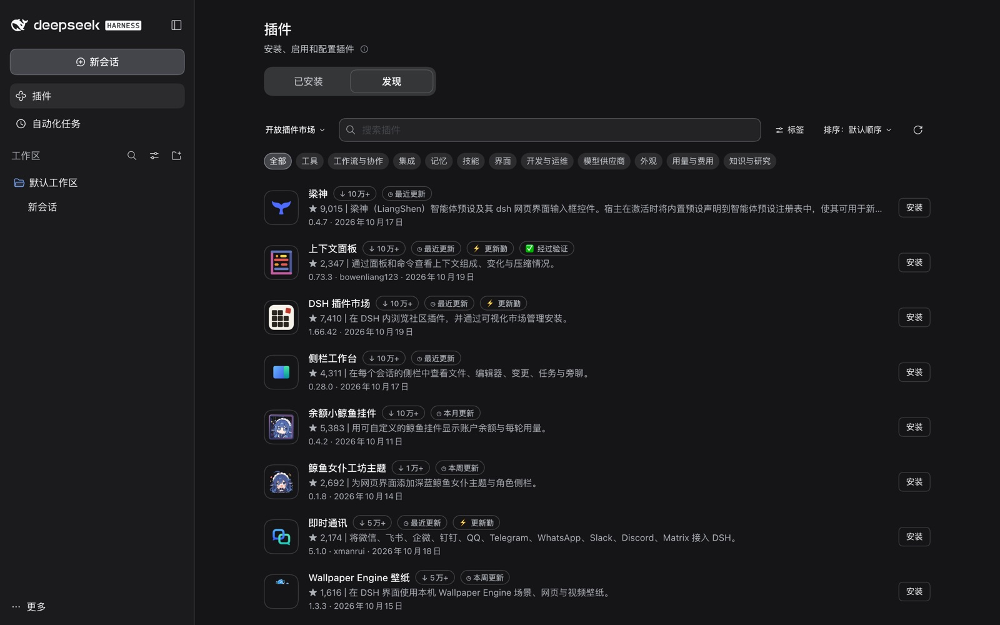
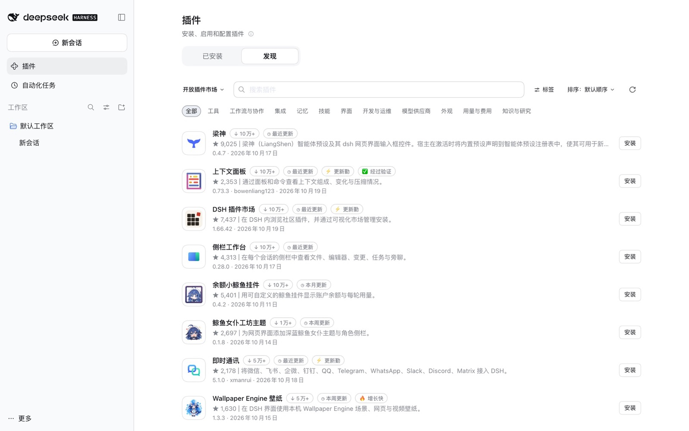

梁神
@linxin666/dsh-liangshen
梁神（LiangShen）智能体预设及其 dsh 网页界面输入框控件。宿主在激活时将内置预设声明到智能体预设注册表中，使其可用于新会话。
DeepSeek Harness 以插件为核心，但官方没有提供社区插件的推荐和列表。10 月 15 日的更新加入了官方插件市场，填入一个索引 JSON 就能浏览和安装社区插件，不用再单独下载处理，方便了很多，于是我们做了这份索引。
不唯 star 🌟 论。默认推荐每天更新，以最近增长快、更新勤、优质的插件为主，同时参考验证、下载量和 star。


@linxin666/dsh-liangshen
梁神（LiangShen）智能体预设及其 dsh 网页界面输入框控件。宿主在激活时将内置预设声明到智能体预设注册表中，使其可用于新会话。
dsh-context
通过面板和命令查看上下文组成、变化与压缩情况。
dshmarket
在 DSH 内浏览社区插件，并通过可视化市场管理安装。
dsh-better-sidebar
在每个会话的侧栏中查看文件、编辑器、变更、任务与旁聊。
dsh-whale-widget
用可自定义的鲸鱼挂件显示账户余额与每轮用量。
@smalltailqwq/dsh-client-ui-skin-maid-atelier
为网页界面添加深蓝鲸鱼女仆主题与角色侧栏。
@xmanrui/dsh-im
将微信、飞书、企微、钉钉、QQ、Telegram、WhatsApp、Slack、Discord、Matrix 接入 DSH。
dsh-plugin-wallpaper-engine
在 DSH 界面使用本机 Wallpaper Engine 场景、网页与视频壁纸。
dsh-pet
赖在 DeepSeek Harness 里的蓝色大肥鱼：爱玩魔方、吃零食、偶尔打盹，会在桌面上溜达，帮你打理余额钱包，闲下来还会陪你聊两句。
@nagi-ovo/dsh-visualize
在会话回复中将交互 HTML 片段渲染为沙箱卡片。
@deepseek-harness-tui/dsh-tui
通过交互终端界面管理 Agent、会话和工具。
dsh-dream-skin
切换可分享的主题，调整壁纸、强调色与半透明界面。
clearai-dsh
将有证据支持的研究整理为可浏览的领域本体。
misakanet
通过 MisakaNet 公共 MCP 服务检索带证据评级的失败经验。
@mars-sea/dsh-commandcode-provider
在 DSH 中注册 Command Code 模型与供应商配置卡片。
dsh-connect-workbuddy
接入本机已登录的 WorkBuddy 模型，并查看账户积分。
dsh-meme
输入框一键斗图：多图库开关、情绪与关键词搜图、AI 学图；图库能从市场一键安装，也能导入/导出 ZIP 分享。
@cloudbase/dsh-plugin
在 DSH 中管理 CloudBase 数据库、存储、身份认证与应用部署。
dsh-codex-subscription
通过 OAuth 接入 ChatGPT 与 Codex 订阅模型，并查看账户额度。
dsh-rewind-plugin
把对话回退到更早的消息，可选一并还原工作区文件。
@a9i5k4/dsh-auto-memory
召回并整理项目记忆，保存交接账本、计划笔记与上下文状态。
dsh-claude-style
为 DeepSeek Harness 网页界面复刻 Claude Code Desktop 的主题插件——象牙白与暖黑双画布、陶烬橙强调色、Claude 风格模型选择器、权限分段与账户抽屉。
@liustack/modlens
通过独立视觉供应商为纯文本模型提供图片理解。
@nanmicoder/dsh-agent-teams
通过任务依赖、直接消息与网页监视器协调 Agent 团队。
dsh-config-manager
DSH 配置的备份、恢复、导出、导入、迁移与同步：设置、插件、MCP 服务器、技能、Agent 预设与工作区，一键搬到新机器。
dsh-cost-meter
统计会话与每日模型费用，显示账户余额、预算和订阅套餐用量。
@modusensus/dsh-mneme
跨会话记忆：自动把会话沉淀进本机 SQLite，需要时按需注入，空闲时巩固（做梦）。
@tt-a1i/archify-dsh
用内置技能把方案与代码库整理为可交互的架构图。
@openviking/dsh-memory-plugin
为 DSH 接入 OpenViking 记忆与上下文服务。
DeepSeek Harness 插件开发知识库：官方文档副本、契约红线、迁移指南、源码核实的问题索引，以及 dsh-plugin-dev 命令行工具。
@nonamelego/dsh-catppuccin
应用 Catppuccin 配色与可选的半透明网页皮肤。
@noob-stupid/dsh-plugin-console
管理插件来源与框架升级，使用回滚和兼容性检查。
dsh-workbuddy-connect
将本机 WorkBuddy 桌面应用中可用的模型接入 DSH。
dsh-image-gen
在会话中接入多家图片生成供应商与本地 ComfyUI。
dsh-gitbash-shell
在 Windows 上使用独立 Git Bash 命令执行器与终端集成。
@tnnevol/dsh-fnos
面向 DeepSeek Harness 的 fnOS 专属集成。
@eddyskywalker/dsh-chatgpt-subscription
DSH 供应商插件，通过 ChatGPT 订阅访问 Codex。
dsh-free-search
使用多个引擎搜索和抓取网页，自定义路由、筛选与失败切换。
@anionex/dsh-vision-toolkit
在 DSH 中进行图片问答、OCR、定位、界面还原与像素比较。
dsh-pet-live2d
在 DSH 界面里挂一只 Live2D 宠物：会跟着鼠标看、点一下有反应、按会话相位换表情，动作 / 表情 / 台词都能配。
@kenz1117/dsh-engram
用 SQLite 记忆图、混合检索和来源记录保存跨会话知识。
在官方「模型」页为第三方模型配置思考档位与图片输入。
@michengai/dsh-skills-manager
管理本机与项目技能，支持仓库安装、更新预览及备份恢复。
dsh-ssh-ops
在对话中驱动远程服务器：交互式终端、SFTP 文件管理、端口转发与数据库管理。
dsh-plugin-tool-management
一个设置面板，统一管理 MCP、技能、记忆、子智能体、提示词和归档会话；可自定义搭配场景，一个场景即可切换整个环境；Agent 也能帮你操作这个插件。
@wenaixi/dsh-ponytail
DietrichGebert/ponytail 懒人 senior 模式与七阶梯子完美移植，6 个技能描述双语自由切换，各个技能自由开关，零 tool 注册，全场景零缓存破坏。
dsh-vision-router
将图片问题路由到视觉供应商，并提供 OCR、定位与像素比较工具。
dsh-file-review
在原生侧栏标签页中审阅工作区文件变更。
dsh-tinyfish-search
基于 TinyFish Search API 的 DeepSeek Harness 网络搜索提供方插件（接入 ctx.web 服务），为智能代理的内置网络搜索工具提供快速、安全、精准的实时联网检索能力。
@furongjun1999/dsh-memory
将会话知识保存到 Markdown 认知图，提供召回与反思工具。
dsh-xiaomi-tts
使用 Xiaomi MiMo TTS 或浏览器本地语音朗读回复。
dsh-lark-link
通过扫码登录、卡片命令与媒体消息连接飞书和 DSH。
dsh-pocket
通过局域网或公网将手机与电脑 DSH 配对，同步访问会话。
@xbzbing/dsh-git-panel
DeepSeek Harness（dsh）网页界面的 IDE 风格 Git 面板，提供分支与历史概览、未提交变更的提交与 amend、差异统计，以及 zsh 风格的分支标记。
dsh-recall-plugin
将会话和工作区恢复到消息发送前，再编辑并重发消息。
@aiwayds/dsh-tui-pi
功能完整的 pi 风格终端界面（TUI），面向 DeepSeek Harness（dsh）：支持历史回看与按轮次分叉、引导式预设切换、实时 subagent 引导、模型配置与主题。
dsh-zotero
检索本地 Zotero 文献库，读取笔记和标注，提取证据并生成引用。
dsh-deja
检索和召回其他编程助手的本地会话历史，无需模型建立索引。
dsh-univer-office
在 DSH 内创建、编辑和审阅表格、文档与演示稿，支持 Office 导入导出。
dsh-agent-plugins-market
DeepSeek Harness（DSH）内的一站式技能、子智能体、MCP 与 LSP 管理器，兼容 Claude Code、Codex、Cursor、Kimi 等智能体插件结构。
dsh-zhihu-search
为模型提供知乎站内搜索、全网搜索与知乎直答，基于知乎开放平台官方 API。
dsh-run2skill
将明确的 DSH 会话经验转化为可审查的原生技能。
dsh-ptc-plus
面向 DeepSeek Harness PTC 模式的会话绑定型原生代理 REPL。
@yunmiao/studymate
在 DSH 中使用结构化学习技能与课程引擎。
@linxin666/dsh-web-all
组合安装任务、Git、远程访问和界面外观扩展。
dsh-ears
用语音在输入框写作，发送前可用 dsh 模型润色；支持本地 Whisper 与多家云端识别
dsh-wallpaper-bg
DSH 独立壁纸背景插件，支持内置壁纸、自定义上传及只读的 Wallpaper Engine 壁纸库（需安装配套插件 dsh-wallpaper-engine-api）。
whale-girl
在 DSH 网页界面添加可互动桌面角色。
dsh-eval-control
aeval 的宿主侧 Cordis 控制插件：一次性配置注入器（实验变量、网关租约预算、分叉谱系、Bundle 描述符），并提供独立的状态模式。
@anysearch/anysearch-dsh
为 DSH 接入 AnySearch 网页搜索、正文抓取与高级检索工具。
dsh-thoughtdag
将当前会话整理为无限画布上的可编辑思维图。
dsh-reference-anything
通过 DSH 的 @ 菜单引用文件、会话、命令、技能以及外部 AI 的历史对话。
dsh-side-chat-plus
侧边聊天 Plus：可在对话中选中文字，并在按会话划分的侧边聊天中提问。侧边聊天是一个隐藏会话，拥有独立右侧面板，继承模型、推理强度与权限设置。
open-sea-skin
在 Chrome 或 Edge 中为 DSH 网页渲染实时海洋背景。
@contexera/dsh-agent-team
为长期任务保存 Agent 团队与协作状态。
@klarkxy/dsh-zhihu
为 DeepSeek Harness 提供知乎搜索、Agent 工具、知识库及用量追踪。
@falling-ts/dsh-force-compact
DSH Cordis 插件：挂接核心模型请求接缝（agent/pre-step 与 agent/request），依据“强制压缩配置”设置命名空间强制压缩会话上下文并关闭思考。
dsh-composer-ux
DSH Web 输入体验增强：可配置发送/换行键、输入框右键菜单、面板尺寸记忆、快捷指令（保存至 ~/.dsh/quick-prompts.json），以及提示词优化并在写回前比对草稿。
dsh-qoder-connect
为 DSH 接入 Qoder 国内与国际模型服务。
dsh-remote
连接 SSH 远程工作区，使用文件操作、镜像同步、部署与端口转发。
dsh-openrouter-providers
OpenRouter 供应商列表：设置请求的供应商与量化位数限制，以 provider.only、provider.order、provider.quantizations 注入，可选经 billion-context 代理转发。
dsh-remote-explorer
远程开发启动器：把 dsh 装到远程主机并在本机浏览器中使用，凭据不离开本机。
@zseven-w/dsh-openpencil
在会话中预览、检查与编辑 OpenPencil 设计文档。
meow-memory
通过 SQLite 分层记忆、检索工具与自动反思保存项目知识。
@huiliyi37/dsh-tianshu-tui
在终端中浏览流式回复、工具卡片、会话、诊断与费用。
dsh-mcp-connector
连接 MCP 服务器，检索活跃连接中的工具并诊断发现问题。
dsh-client-auto-continue
在网络错误等非人工中断后自动发送继续提示。
dsh-paoding
庖丁：DSH（DeepSeek Harness）编排模式安装器，提供感知宿主的角色工具过滤，以及 Web 设置页的可视化配置器。
dsh-web-mobile
为竖屏和移动设备调整网页界面布局。
dsh-smooth-stream
调整 Markdown、代码、表格与工具结果的流式渲染和滚动。
dsh-ego-browser
调用浏览器自动化工具，并查看或操作实时浏览器画面。
dsh-image-pathify
DeepSeek Harness 插件：让纯文本模型也能接收粘贴的图片，并通过内置的兼容 OpenAI 的视觉工具进行分析。
dsh-mcp-manager-plus
DeepSeek Harness 的 MCP 管理设置页：可在浏览器中列出、启用、配置和添加 MCP 服务器，并持久写入配置档的用户补丁层。
dsh-fs-encoding
面向 DeepSeek Harness（dsh）的编码感知读取、写入、编辑与 grep 工具：保留 UTF-8 BOM，并对 GBK、Big5、Shift-JIS、EUC-KR、Windows-1251 及 UTF-16 实现字节级精确往返。
@wenbin_wb/dsh-bridge
手机扫码即可在移动端/公网继续用 DeepSeek Harness，人不在电脑前也能接着干。一键局域网二维码、Cloudflare 公网隧道、自建隧道与微信 / QQ / 飞书 / Telegram Bot（多工作区/会话持久化/媒体/卡片审批/流式输出），无需自己搭公网服务器。
dsh-mcp-studio
在 DSH 侧边栏面板里管理 MCP 服务器与技能；装了 dshmarket 时内嵌插件市场。
@ychris12138/dsh-usage-stats
查看 Token 用量、供应商账户、会话费用、预算与导出记录。
@opencode2dsh/dsh-plugin
通过原生适配器为 DSH 接入 OpenCode Zen 模型。
dsh-ui-harmonizer
DeepSeek 设计规范：统一 Harness 界面语言，并为社区插件做针对性适配，附只读兼容性审计。
dsh-github-flow
DeepSeek Harness 的 GitHub 工作流引擎，原生集成 gh，提供 18 个智能体工具（涵盖 PR、CI 诊断、发版、密钥、规则集及 Copilot 调度等）与 /gh 快捷指令。
better-dsh-session-deletetool
查看关联子 Agent 会话，并在侧栏选择删除会话组。
dsh-skin-market
浏览和管理 DSH 原生主题皮肤。
dsh-ssh-tunnel
面向 DeepSeek Harness 的多主机 SSH 隧道与 SSHManager 工具，授权按项目划分。
dsh-connect-sensenova-token-plan
面向 Harness 网页界面的 SenseNova 连接套件：Token Plan 额度面板（含各额度池配额、各模型消耗与自动续期令牌），并可注册供应商接入 SenseNova 模型。
dsh-global-rules
在网页设置面板中编辑用户全局的 AGENTS.md（$DSH_HOME/AGENTS.md）。
dsh-bloom-theme
应用可自适应深浅模式的配色与磨砂玻璃界面。
dsh-session-title-pattern
按“日期｜类型｜主题”格式自动管理 dsh 会话标题：由模型总结整个对话的类型与主题。
dsh-font-enhancer
全权自定义 DSH 界面字体：按区域设置中英文字体、字号、字重和颜色，框选建区、全局统一、保存与切换主题、随机配色，并可一键安装可爱字体。
dsh-plugin-bridge
预览并生成结构化交接资料，在不同预设之间迁移会话。
dsh-model-think-level
为 DSH 中的第三方模型补齐思考等级：官方 Models 页提供 Thinking 开关和强度/模态编辑器，输入框模型菜单提供供应商到模型的选择器，并可按路由接管请求头与 user-agent。
@dickpy/dsh-imagegen
在网页界面配置供应商通道，生成或编辑图片。
@weibaohui/skills-management
管理多种编程助手的本地技能，并导入 DSH 与浏览技能市场。
@restregular/dsh-memory
DeepSeek Harness 本地长期记忆（单包单入口）：JSONL 存储、本地向量检索（BGE-M3）、四个模型工具、自动召回注入与管理面板。
dsh-opencode-go
在 DSH 中管理 OpenCode Go 模型与多个账号，并显示订阅额度。
dsh-continual-evolve
中央 SQLite 记忆与技能库，按工作区分区：开局注入索引、显式写入与提案制提取全部过代码门禁，技能物化为 SKILL.md。
dsh-builtin-browser
使用可由 Agent 自动操作、也可由用户接管的可见浏览器。
lunheng-article-pipeline
论衡是 DeepSeek Harness 的多智能体长文流水线技能包，依次完成检索、人工确认大纲、写作、批判、审计、审稿、修订与交付，由九个互不可替代的角色分工完成。
dsh-auto-memory
自动注入 MEMORY.md 索引，管理分类的跨会话记忆文件。
dsh-map-tools
DeepSeek Harness 地图与路线工具：驾车、公交、步行、骑行路线规划，地理编码、逆地理编码与 POI 搜索，可使用高德或免费的 OSM/OSRM。
dsh-opencode-patch
DeepSeek Harness 上的 OpenCode：会话亲和性、Zen/Go 网关来源请求头、免费档工具回退，以及实时 Go 配额显示。
dsh-skill-mcp-panel
通过网页侧栏与命令行统一管理技能和 MCP 服务器。
dsh-watcher
只读查看会话运行信息与本机模型用量统计。
dsh-status-rotator
按运行阶段显示可编辑文案、主题与状态栏动画。
dsh-taskboard
跟踪项目任务并在会话中执行，可为任务配置独立 Git 工作树。
dsh-soul
为 DeepSeek Harness 添加个性化设置。
dsh-any-background
自定义主题色与图片或视频壁纸，分别调整各区域的透明度和模糊度。
dsh-prompt
管理预设和自定义模板，一键插入当前输入框。
@rayadesu/dsh-billing
DeepSeek Harness 计费插件：显示账户余额及本次会话的计费消费，并在会话头部显示徽标。
dsh-computer-use-win
通过 UI Automation、截图、OCR 与 PowerShell 操作 Windows 应用。
@feng0531/dsh-vcs
面向 DSH 的只读 Git 与 SVN 变更预览。
dsh-passwords
为远程访问配置登录、用户权限、配额、HTTPS 与审计日志。
@montersy123/dsh-skill-market
在 DeepSeek Harness 内浏览、搜索并安装 SkillHub 技能。
@deepseekstudio/dsh-deepseek-pet
把 DeepSeek 账户余额交给一只悬浮在 Windows 桌面上的蓝鲸女仆桌宠：宿主端查询余额并通过 127.0.0.1 回环接口推送，另附 pet_balance / pet_control 两个工具，可直接问余额或让桌宠说话。
dsh-local-llm-controller
DSH 插件：在“设置 → 插件”页面启动或停止本地 llama.cpp 的 llama-server，提供 A/B 两个模型槽位，每个槽位可单独选择模型文件，并可编辑八项启动参数。
@morlay/ollama-provider-profile
Ollama 一套配置：一次性配置 llm-pi-ai 的 ollama 供应商，并让 web_search 使用 Ollama 后端（含网页行的供应商选择）。
@shengsheng/dsh-taskboard
用本地 SQLite 看板管理项目任务，支持 Agent 领取、执行跟踪和人工验收。
dsh-plugin
在 DSH 中浏览、搜索并安装社区插件。
dsh-worktree-space
工作树空间：一任务一空间，多路并行。每个任务在涉及的各 Git 仓库中以独立 worktree 运行，完成后合并回各目标分支，冲突可交给智能体处理。
dsh-tabbit
操作 Tabbit 标签页，抓取网页，并在输入框引用浏览器内容。
@fish-under-sea/dsh-fish
Fish 自建 DSH 插件合集，一键插入 13 个插件的插件行，其中 11 个为本仓库子包，另有两个外部补充包。
dsh-bili-scroll
读取视频字幕并筛选内容，生成日报与消息提醒。
dsh-plugin-cards
DeepSeek Harness (dsh) 设置卡片与对话节点插件
dsh-comfyui
运行本机或远程 ComfyUI 工作流，管理素材面板与工作流技能。
@hytime/dsh-thinking-effort
为第三方模型配置思考强度，并设置子 Agent 的默认档位。
dsh-session-continuity
新会话开始时注入一条简短的接续指针；若没有交接文档，则优先复用上一会话的压缩摘要。
@zaofan/dsh-qqbot
通过 QQ Bot 为 DSH 提供即时消息通道。
@goodandready/dsh-russian-lang
为 DSH 核心与生态插件提供可切换的俄语界面。
@pymodel/dsh-tavily
为 DSH 提供 Tavily 网页搜索（可无 Key 或使用 Key；关闭时为官方 DeepSeek），并集成 Tavily MCP：搜索、提取、爬取、站点映射与研究。
dsh-theme-tarkov
面向 DeepSeek Harness Web UI 的《逃离塔科夫》主题插件：顶部测试版警告横幅、半透明循环视频背景、背景音乐停靠栏和事件音效。
dsh-kimi-subscription
接入 Kimi Code 订阅模型，支持设备登录、网页搜索和额度查询。
dsh-suggest-ghost
给 DSH 输入框加上输入预测：回合结束后自动建议你的下一句话，Tab 一键采纳；输入时按会话历史做前缀补全。输入预测 / 自动补全。
dsh-math-memory
DeepSeek Harness 的 Obsidian 侧边面板数学记忆智能体，提供分层长期记忆、带主动复习提醒的灵感备忘，以及统一的 note_recall 检索与笔记工具。
dsh-bottom-info-bar
在输入框下方显示模型、余额或订阅额度，以及会话与历史费用。
dsh-web-icon-indicator
浏览器标签页图标反映 DSH 会话状态（空闲 / 运行中 / 询问 / 完成），由一个基础 SVG 在浏览器中着色并添加动画，颜色和效果均可配置。
dsh-plugin-control-your-development
开发仪表盘：把 control-your-development 的产品仪表盘嵌进 DSH 右侧边栏与会话页。
dsh-maze
在时间线上查看任务路径、绕行与回退，并比较多个会话。
huaweicloud-devkit
在编程会话中使用华为云技能、KooCLI、API 与 SDK。
dsh-office-tools
在会话工作区中创建和读取文档、表格与演示文稿，并更新文档和表格。
dsh-knit
检索并排序文档、代码与媒体，在侧栏组织上下文资料。
@hyzyn/dsh-plugin-kit
安装可复用的插件模板、开发工具与入门组合包。
dsh-plugin-weixin
Weixin（个人微信，iLink Bot API）渠道插件：在微信中指挥 DSH 智能体，支持图片、文件和语音转写。
dsh-webcode-bridge
将已登录的网页版 AI（DeepSeek、GLM、Kimi、Qwen、豆包等）作为 DeepSeek Harness 的模型提供方。网页模型输出工具调用，由 DSH 通过其原生权限系统执行。
@daweifu/capability-menu
统一管理能力目录，按需检索和调用工具，并设置投影策略。
dsh-session-manager
批量移动、归档和标记会话，管理工作区显示与预设迁移。
dsh-reel
dsh Web UI 的媒体库：以网格或列表浏览已配置的本地目录，在查看器中打开图片，并在页面全屏播放器中播放视频，支持滑动切换。
dsh-composer-plus
DeepSeek Harness 辅助功能：新增 11 种界面语言、变更面板、输入历史、Shift+Tab /plan、一键继续，以及重启后恢复运行中的会话，并支持队列拖拽排序与深度链接。
dsh-notify-me
为任务完成、提问和审批发送桌面或 Webhook 通知。
dsh-sidecard-ask
DSH 划词追问（侧边卡片作答）：在聊天区与任务区选中文本就地追问，答案由独立子代理在侧边卡片里流式呈现，也可选择落回主对话。
dsh-tool-activator
默认仅加载基础 DeepSeek Harness 工具，其他工具按需激活。
@dely0/dsh-personal-workbench
组合日历、分层任务、AI 拆解、执行复盘与桌面提醒。
@dingyi222666/dsh-session-notification
为会话完成、失败、提问和权限请求配置声音与浏览器通知。
@ricardochen1996/dsh-browser-use
DeepSeek Harness 浏览器供应商：将页面读取为带索引的操作空间，然后每次仅执行一项受保护的操作。
dsh-background-by-model
按模型规则配置壁纸和外观，并轮播匹配的图片。
dsh-service-monitor
DeepSeek Harness 第三方服务余额监控：录入 API Key，按 1/5/10/30 分钟定时查询剩余额度，提供主面板看板与侧边栏状态图标。支持 Tavily、博查、Firecrawl、SerpAPI、SearchApi、ScrapingBee、ScraperAPI、TinyFish。
dsh-flyout-sidebar
可弹出侧边栏：一个显示 Artifact 的 DeepSeek Harness 侧边栏，可弹出到更大的网页标签页中。
dsh-openviking-enhance
DSH 网页界面中的 OpenViking：Studio 面板、按会话显示的记忆提交状态胶囊及其提交时间线，以及展示当前会话检索内容的右侧栏标签页。
@vibedev-si/dsh-ecosystem
VibeDev 生态：发现、安装和管理 VibeDev 出品的插件，实时核对正式版更新，并可浏览 DSH 社区市场。
dsh-tavern
管理角色卡、世界书、预设、记忆与剧情选项，部分功能需配套插件。
dsh-plugin-remote-access
在 DSH 0.2.1+ 中将本机 DSH 网页界面开放给指定 CIDR 网段（如 Tailscale），可选数字访问码，并提供仅作用于远程页面的手机布局。
dsh-pentester
为 DSH 提供按 PTES 流程组织的测试编排预设。
superpowers-dsh
为 DSH 接入测试驱动开发、调试、规划与协作技能。
dsh-web-search-diy
DSH 网页搜索提供方，按供应商与协议组合选择：支持 Chat Completions、Responses 和 Anthropic Messages 的内置搜索工具，以及独立搜索 API。
dsh-easyrewrite
撤回并重新编辑网页会话中的消息。
dsh-plugin-mobile-gateway
配对移动设备，同步会话与文件，支持局域网和 Cloudflare 隧道。
dsh-trip-planner-cn
DeepSeek Harness 插件外壳：将境内旅行规划智能体技能（trip-planner-cn）注册到 DSH 技能目录，安装后即可按名称加载 SKILL.md 及其 references、scripts、themes 资源。
dsh-composer-layout
在底部、右侧和自动三种输入框布局之间切换，支持响应式尺寸与感知空间的控件。
dsh-update-checker
检查 DSH 和第三方插件更新，提供备份、回滚与重启流程。
dsh-cyberwhale
为 DeepSeek Harness 提供 macOS 与 Windows 风格界面、主题配色、壁纸和字体设置，以及可独立开关的蓝鲸桌宠。
dsh-secure-audit
检查提示注入模式、脱敏规则与本机配置，并输出风险报告。
dsh-vibe-math
使用结构化 Agent 预设进行数学探索、求解与验证。
dsh-undo-savepoint
为配置变更保存快照，撤销操作并恢复损坏的插件配置。
dsh-opencode-go-plus
DSH 插件：独立的 OpenCode GO LlmAdapter，独占其提供商路由（按模型区分线路协议，包括 union-alpha 的 anthropic-messages），并管理模型、上下文与模态。
deepseek-harness-zh_pro
通过可配置扩展调整界面布局与会话提示词行为。
@openma/deepseek-harness-tui
在终端中使用 ACP Agent 与 Cordis 客户端树。
dsh-tailscale-console
DeepSeek Harness 的 Tailscale 远程访问运营面板：健康检查、HTTPS 入口开关、macOS 代理绕过、中继服务器运维、ACL 片段生成。
dsh-deepcanary
通过本机提醒、通知与任务收件箱查看需要关注的会话。
dsh-freeroute
DeepSeek Harness（dsh）免费额度模型聚合：基于 OpenCode Zen、B.AI、OpenRouter、SenseNova 等免费额度上游池注册 freeroute 提供方。
dsh-origin-plugin
通过 MCP 工具操作 OriginLab 数据导入、科研图模板与图表编辑。
dsh-memoir
用本地热记忆、BM25 检索与来源记录保存跨会话项目知识。
newmark2dsh
DeepSeek Harness 的 Newmark 核心：包括 MemoryLab、ComputerUse、Agent API、NewMate 陪伴内核与 heartBeat 重启投递，提供五个独立开关，共用 ~/.Newmark 用户库。
@zhangfengshun/dsh-remote-ssh
连接服务器或超算，在远程工作区使用文件浏览器与终端。
dsh-popout-sidebar
在侧栏查看产物，或将面板弹出为更大的浏览器标签页。
@dan-ai-studio/dshopencodego
DeepSeek Harness 的 OpenCode Go 供应商：实时网关模型目录、按对话显示的会话头以及用量统计。
gongwen-skill
使用格式规则和模板检查、修订中文公文。
@ninkch/dsh-infinite-canvas
DeepSeek Harness 的节点式短剧工作室：在无限画布上完成剧本 → 分镜 → 素材 → 镜头 → 配音、字幕成片的全流程。
@tencent-connect/dsh-qqbot
通过 QQ Bot 连接 DSH 消息与会话。
dsh-web3
DeepSeek Harness（DSH）插件：面向智能体安全使用的 EVM 钱包，包含加密保险库、签名策略、模型工具、内置技能及网页界面。
dsh-cad
在会话中查看二维与三维 CAD 文件，并调用参数化建模与导出工具。
dsh-game-material-master
通过专用工具生成游戏精灵、动画帧、地图、图片与音乐。
dsh-dpk-manager
DeepSeek Harness 的 DPK 管理器：在插件页面面板及会话内 dpk 工具中，打包、校验并安装本地 DSH 插件包（.dpk）。
@jcy2387/dsh-codex-provider
连接 ChatGPT 账户、选择代理，并查看用量与额度重置信息。
dsh-kimino-theme
为网页界面添加《你的名字》主题与壁纸素材。
dsh-custom-js
在 DeepSeek Harness 中加载、编辑、管理可信的 JavaScript 与 TypeScript 用户脚本，并支持热重载。
dsh-agent-studio
可视化组合提示词、工具、技能、子 Agent 与备用模型。
dsh-obsidian
搜索、读取、编辑、移动和删除本机 Obsidian 笔记。
dsh-graph
通过关系图与看板管理 Agent 目标。
dsh-harmony
在运行时修补、替换或装饰 DSH 插件。
dsh-skill-hub
在设置页浏览和开关技能，检查格式问题，并从仓库导入及跟踪更新。
dsh-token-optimizer
为 DeepSeek Harness 提供确定性、可恢复的工具结果压缩，以及感知缓存的上下文压缩。
dsh-skill-picker
搜索已安装技能，并将官方技能调用指令插入输入框。
dsh-sessions-manager
在统一面板归档、恢复、删除或跨工作区移动会话。
dsh-web-git-sidebar
DSH Web Git 侧边栏：仿 VS Code 风格的左侧 Git 面板，支持分支切换、提交图谱、逐次提交预览，以及跟随会话的页脚入口。
dsh-notice-center
DeepSeek Harness 通知中心：标签页鲸鱼状态灯（绿=跑完 / 琥珀=待处理）+ 浏览器系统通知（完成/待处理提示、45 个 opencode 音效可选、音量可配）。
dsh-blender
在 DSH 中调用 Blender 制作、重建、验证与导出流程。
dsh-ui-appearance
调整主题配色、背景图片、透明度与模糊。
dsh-gitbar-lite
DSH 中仿 GitHub Desktop 风格的 Git 面板，位于内置右侧边栏，支持变更文件勾选暂存、摘要与描述、Commit 与 Commit and Push、丢弃到回收站及差异预览。
dsh-plugin-tether
通过点对点或中继连接，从 Android 与 iOS 访问电脑上的 DSH。
memory-eternal
将会话知识卡保存到本地 Markdown 库，并按需召回。
dsh-git-plus
dsh 面板插件：侧边栏 Git 管理，包括本地更改 / 所有提交、分支/标签/储藏管理，以及带冲突处理的合并。
dsh-pet-remielle
用贴纸角色、状态气泡与桌面浮窗反映会话事件。
@ggboy123/dsh-paper-reader
转录和检索 PDF，通过内置阅读器配合会话阅读论文。
dsh-comfyui-image
DSH 图片生成插件：基于本地 ComfyUI 服务，只对外暴露一个统一的 generate_image 工具（文生图、图生图、局部重绘、背景移除）。
@loongsuite/dsh-plugin
为 DSH 接入 OpenTelemetry 生成式 AI 可观测数据。
dsh-xdpool
聚合多个账户与供应商模型，查看用量并配置路由和本地网关。
dsh-origin-bridge
在对话中驱动本机 Origin / OriginPro：导入数据、绘图、拟合、导出图片，并保存可在 Origin 中继续编辑的 .opju 工程；共 27 个 MCP 工具。第三方工具，与 OriginLab Corporation 无关联、未获其认可。
dsh-plugin-subagent-director
按调用参数、角色与默认策略为子 Agent 选择模型。
dsh-drawai
在侧栏编辑画布，并通过语义绘图工具读写 .drawio 文件。
oss-prompt-optimizer
通过当前模型将原始指令整理为角色、任务、上下文与格式。
dsh-remote-mobile
通过局域网或 Tailscale 提供远程访问、扫码登录与连接管理。
dsh-computer-use
结合截图与视觉模型，提供虚拟鼠标和桌面操作工具。
dsh-email
连接多个邮箱，在会话中收发和搜索邮件，并管理附件、本地草稿与发信审批。
将 DSH 问答或选中的对话组分享为 PNG 图片或 Markdown
dsh-web-lan-access
为网页界面配置局域网绑定和远程宿主访问。
kkj-luna-dsh-image-bridge
生图桥：给没有生图/修图能力的模型接入外部生图模型。在 Web 界面配置 API 与 Key，模型即可直接调用生图/改图能力。
dsh-read-url
识别编码并读取网页与订阅源，处理分页，输出精简正文。
@xiaoyuyu6420/dsh-backup
通过定时快照备份、恢复和迁移 DSH 数据，并诊断会话日志。
dsh-env-inspector-plus
环境体检：在“设置”中新增分页，展示宿主进程身份与环境变量分组（值不出宿主），并为模型提供只读的 env_inspect 工具。
dsh-web-search-plugin
DeepSeek Harness 统一网页搜索接口（ctx.web）的后端支持：DeepSeek（官方）、Tavily、Brave、Serper、SerpApi、Exa、SearXNG、Scavio 和 Firecrawl。
dsh-think-translate
在显示层翻译思考、任务卡片及可选的回答文字。
dsh-theme-native
为 DeepSeek Harness Web GUI 提供基于设计令牌的原生主题，支持自定义颜色和系统字体选择。
dsh-recall-unread
在模型读取前撤回已发送但尚未处理的文字消息。
@lynn123411/dsh-chat-translate
DeepSeek Harness 网页界面的助手回复翻译（兼容 OpenAI 的通道）。
dsh-model-context-catalog
按参考来源匹配模型上下文窗口，并选择性批量配置。
dsh-whale-galgame
为网页会话添加多角色互动界面与可选桌面伴侣。
sage-mem
将跨会话记忆保存为本地 Markdown 文件，按问题检索并注入相关内容。
dsh-folder-attach
让 DeepSeek Harness 网页输入框支持拖入或粘贴文件夹，并提供宿主文件夹对话框、/folder 命令及 @path 提及。
@xmoon76/dsh-pi-tui
为 DSH 配置安装 Pi 风格的终端界面。
dsh-qa-skills
提供需求分析、测试策略、用例、自动化、探索与回归测试技能。
dsh-embedded-workbench
使用涵盖实时系统、中断、存储、调试和架构的 C/C++ 固件开发技能。
@doitian/dsh-music
DeepSeek Harness 的网易云音乐（music.163.com）播放器与 AI DJ：侧边栏页面支持应用内播放、扫码登录，并提供由代理工具整理播放队列的功能。
dsh-qa
管理需求、测试用例、缺陷、里程碑、报告与版本记录。
dsh-ui-tweaks
在设置面板调整代码字号、布局、分支显示与会话辅助功能。
@jiaoqsh/dsh-document
DeepSeek Harness 插件包：read_document 工具可将 Word、PowerPoint、Excel、OpenDocument、RTF、EPUB、CSV 和 PDF 文件读取为 Markdown 供模型使用。
@linbin-mk/dsh-notify
DeepSeek Harness 的第三方 macOS 菜单栏活动指示器。
dsh-wechat
通过微信 iLink Bot 连接 DSH 会话。
dsh-flowglass
可视化会话执行过程、工具调用与并发 Agent 分支。
@xgone/dsh-remote
为网页界面提供登录、多因素认证、角色权限与远程目录选择。
dsh-plugin-lookatstudy
将 Markdown、文件夹或学习仓库组织为带复习安排的课程。
xiaozhi-dsh
通过 MCP 将 DeepSeek Harness（DSH）Web 能力开放给小智语音助手：自包含的 DSH 插件包，将 DSH 注册为 MCP 工具提供方，支持多设备。
dsh-gotify-notify
DSH 会话轮次结束时的 Gotify 通知插件：宿主与浏览器插件包，可在设置界面中配置。
dsh-aginxbrowser
抓取渲染后的网页、检索多个来源，并自动操作浏览器会话。
dsh-plugin-message-edit
编辑历史提示词以回退和分支会话，并在树中浏览版本。
@jiyr0119/dsh-workspace-explorer
在侧栏浏览、搜索和预览文件，点击或拖拽插入引用。
@yolk_vat-y/dsh-project-memory
索引工作区文档和代码符号，带来源召回项目经验。
@dsh-remote/plugin
DSH 远程控制的宿主侧插件：将本机 DeepSeek Harness 与中继配对，微信小程序可发送指令、查看流式输出并回答审批。载荷端到端加密。
dsh-theme-mineradio
为网页界面添加电台风格配色、玻璃表面、壁纸与动效。
dsh-preset-enhance
预设编辑、提示词注入与 DeepSeek 适配器配置。
dsh-startup-animation
DSH 启动动画与动态背景插件：启动时全屏播放本地视频，并提供可调节不透明度与播放控制的持久背景视频层。无第三方依赖，跨平台。
@opdsh/unity-plugin
通过 Unity 命令行管理项目、执行编辑器流程和 C# 代码。
@kagurazakayashi/dsh-startup-command
DeepSeek Harness 网页插件：在网页配置成功启动后运行用户自定义的命令。
dsh-toolbox-ui
在浮动面板中管理 MCP、导入配置并浏览技能市场。
@jayyuen66/dsh-ocr-review
dsh 工作区代码审查插件：将 open-code-review（ocr CLI）封装为 5 个模型工具，并提供设置卡片，可从宿主设置服务的提供商列表中选择提供商/模型并应用到 OCR 配置。
dsh-genui
在回复中渲染图表、表单、计算器与小应用，并将操作反馈给模型。
dsh-wallpaper_share
将当前 Wallpaper Engine 壁纸同步为可调整的网页背景。
dsh-novel-forge
管理章节写作、设定约束、重复检查、批量起草与全书复核。
dsh-journal-calendar
DeepSeek Harness 的每日日记与日历：journal_record 工具每天追加一个 JSON 文件，右侧栏将其绘制为日历。
dsh-joi-channel-theme
为网页界面应用 Joi Flowers 或 Joi Library 同人主题。
dsh-echocat-skill-panel
查看每轮技能调用，并管理已安装技能及其上游更新。
dsh-persona-dafeiyu
导入、切换和管理内置或自定义会话人设。
dsh-plugin-cicd
发布台（Release Console）：DeepSeek Harness 侧边栏入口与主面板页面，展示各仓库的构建与发布情况，标示本地检出是否领先，以及本配置中安装的副本是否过时。
dsh-slash-command-filesystem
DeepSeek Harness 的本地文件系统斜杠命令提供方
dsh-better-edit
通过行哈希执行读取、编辑和撤销，拒绝过期或歧义锚点。
dsh-custom-theme
可由用户编辑的 CSS 主题与背景图片，适用于 DSH Web GUI 和桌面应用，并在设置中提供选择器。
dsh-multi2api
Multi2API 账号池：把多个 WorkBuddy 账号变成 DSH 里一个个互不干扰的模型。
@yokira404/dsh-thinking-highlight
思维链关键词计数与高亮：支持每个词的计数标签（点击可屏蔽）、每词颜色、文字颜色与字号，以及全词匹配。
dsh-wsl-workspace
在选定的 WSL 发行版中运行会话命令与文件工具。
dsh-ctrl-wheel-zoom
DeepSeek Harness 网页界面支持 Ctrl+滚轮缩放页面，并提供屏幕缩放提示标签与“通用”设置项。
dsh-better-input
提供文件转 Markdown、本地文件引用、提示词优化与语音输入。
dsh-channel-wechat
DeepSeek Harness 的微信（iLink / ClawBot）渠道
dsh-live2d-pets
添加随会话状态变化的 Live2D 角色，支持人设与自有模型。
dsh-workbuddy-bridge
无需任何配置，将 WorkBuddy 桌面应用中包含的模型自动接入 DeepSeek Harness。
dsh-agy
通过 OAuth 连接 Google Antigravity，并管理多账户模型访问。
dsh-pause
在下一次模型请求前暂停，允许用户补充文字并手动继续。
dsh-fonttune
分别调整对话、界面和代码的字体样式，并保存、导入和导出排版预设。
@maci0/dsh-google-vertex
DeepSeek Harness 的 Google Vertex AI 提供商：通过服务账号认证，支持 Google 托管的 Claude 与 Gemini 模型。
dsh-notion-oauth-ui
通过 OAuth 2.0 + PKCE 在图形界面中连接 Notion，使用官方 Notion MCP，无需集成令牌。
dsh-token-pet
用浮动角色展示运行状态、上下文与累计 Token 用量。
search-boost
融合多引擎搜索、网页抓取与 X 检索，并提供 DSH 适配器。
dsh-streamfold
展示当前思考，将较早的思考与工具输出折叠为简短摘要。
dsh-hdc-bridge
接入 hdc 设备调试、版本化 API 文档和 DevEco 编译辅助。
dsh-memory-palace
将 WorkBuddy 基于文件的记忆系统移植到 DeepSeek Harness：用户级与工作区级的人类可读 Markdown 记忆（~/.deepseek-harness/MEMORY.md 与 <cwd>/.deepseek-harness/memory/）。
dsh-knowledge
管理文档、分块与向量检索，并通过工具和面板查询知识库。
dsh-theme-firefly
应用流萤角色壁纸、主题配色与开场动画。
@y1x1n/dsh-prompt-optimizer
使用当前会话模型，在输入栏旁分析并改写提示词。
dsh-file-upload
上传和引用文件，将文档转为 Markdown，并提供图片与文档读取工具。
@cocofhu/anime-find
在会话中搜索动画来源、查看详情并使用播放入口。
dsh-gemini-quota
在 DeepSeek Harness 输入框显示 Gemini 额度条，点开即为多账号池面板：逐账号查看剩余额度、启停冷却、检测保活，并可一键切换账号。
@geml/dsh-plugin
按可寻址内容块读取和编辑文档，并提供文档与代码图技能。
@fufu1437/dsh-delete-chat
永久删除 DeepSeek Harness 对话及其所有本地数据：会话日志、派生缓存、工作区索引条目、溢出文件以及未被引用的附件。
weir-harness
Weir：以编排器为核心的 DSH 智能体预设，包含意图门控、类别委派、待办驱动、基于拉取的后台任务、自动压缩与 hashline 编辑。
dsh-ui-wallpaper
DeepSeek Harness 自定义壁纸插件：在设置面板中选择本地图片作为背景，可调节不透明度、模糊、界面通透度和压暗，并即时预览。
dsh-conversation-navigator
按轮次查看可折叠大纲，点击跳转并跟踪当前滚动位置。
@qwqweeo123/dsh-extend
一个包内含六项功能，包括来自 codex-pets.net 市场的透明置顶桌面宠物，以及来自 wallhaven.cc 市场或本地图片的全局壁纸。
@zoria-lind/dsh-token-optimizer
组合使用输出限制、结果缓存、文件差异、工具裁剪与 MCP 延迟加载。
@mokuyoaxis/agent-guard
提供可逆操作、输出脱敏、恢复证据与共享决策协议。
dsh-whale-girl-pet
用角色状态与任务气泡展示会话进度、Token 用量和费用。
dsh-recommend
按公开评分模型检索和推荐插件，并在设置页展示排行。
@model-arena/dsh-better-sidebar
DSH 的增强侧边栏：在同一列中提供文件树、编辑器、变更、任务与侧边聊天，并为每个对话独立保存；同时对外提供服务，供其他插件注册侧边栏项。
minecraft-dev
使用区分版本的技能与 Gradle 工具开发 Minecraft 插件和模组。
dsh-openrouter-spend
DeepSeek Harness 插件：显示 OpenRouter 账户今日实际扣费，包括每个对话与总计，位于输入框下方及设置页，并按模型与 API Key 拆分。
dsh-i18n-ja
DSH 网页界面日语语言包：在共享语言目录中注册日本語，并为 dsh-web-all 系列所有插件命名空间提供 ja 词典。
dsh-skills-anywhere
汇总本地与 Git 来源的技能，供 DSH 或本地 MCP 按需加载。
@txc2768651338/dsh-effort-slider
通过网页界面的可配置滑块调整模型推理强度。
@memef1f1y/dsh-plugin-tts
配置 Edge TTS 等语音引擎，手动或自动朗读消息。
@mofeng2223/dsh-claude-provider
为 DSH 0.2.1-rc.2 接入自定义 Claude 供应商。
@utmotc/dsh-balance-card
以始终可见的 dsh Web 侧边栏卡片（或原有输入框胶囊）显示服务商 API 余额与订阅额度，即当前会话所用模型对应服务商的余额。
dsh-novel-writer
管理章节参考、叙事连贯性、改稿检查与创作素材。
dsh-image-tiler
在接收前将超大图片分块，以清晰的高分辨率展示给模型。
dsh-hackatime
将你的 DeepSeek Harness 编码时长记录到 Hackatime（兼容 WakaTime 心跳）。
dsh-desktop-plugin
下载、更新并启动桌面外壳，创建快捷方式与启动工具。
@railgun52/dsh-mcp-servers
dsh 网页界面的 MCP 服务器设置页：通过 JSON 编辑器编辑配置命名空间，并根据已保存的服务器挂载实时的 mcp-client 实例。
dsh-router-laya
按请求判定模型档位，并在输入栏显示自动档位。
dsh-sidebar-qa
选择对话文字，在同一工作区的独立会话中继续追问。
dsh-hitl
DSH 工具调用的人在回路（Human-in-the-loop）关卡：可将任意工具置于审批、修改或拒绝的决策卡片之后，并可选倒计时。
dsh-ssh-remote
DSH 插件：SSH 远程运维/开发工具套件（run/read/write/edit/glob/grep/push/pull），包含 ControlMaster 连接层、状态面板，以及设置页中的主机管理。
prts-terrarchive
检索和阅读 PRTS.chat 语料，并使用角色化三维资料工作区。
dsh-desktop-ui-reasoning-effort
DSH 插件：在模型设置页为自定义 pi-ai 提供方配置每个模型的推理强度级别，并内置 GPT、Claude、Grok、GLM 和 MiMo 模型的预设。
dsh-subscriptions
DeepSeek Harness 的统一订阅供应商与用量看板。
dsh-dev-env
DSH 插件：盘点 Windows 开发与测试工具链，找出缺失项，并可一键补齐。
dsh-whale-bridge
连接 pet-whale 与 dsh-whale-widget：桌宠靠近挂件时进入「假装工作」状态并转身面向挂件；挂件扫到桌宠时用默认气泡播放一段默认文字（不修改两个前置插件的源文件）。
dsh-git-tools
DeepSeek Harness 的 Git 工具与 /git 斜杠命令，在宿主进程中运行 git，即使会话 Shell 处于沙箱中，push、pull 和 fetch 也能正常工作。
dsh-web-api-balance
在 Harness 网页界面中显示 DeepSeek API 余额及本次对话消耗：输入框旁的常驻余额胶囊，悬停可展开明细。
@purezhi/dsh-plugin-pando
DSH 界面的 Pando 桌面宠物，复刻 confirmo.love 陪伴角色，支持本地精灵图目录和社区精灵图。拖动移动，右键切换精灵图。
@tomowang/dsh-tui
为 DSH 配置提供独立的终端界面组合包。
dsh-turn-price
DeepSeek Harness（dsh）插件，在每个已完成的回合下方显示人民币费用，依据各模型的缓存命中/未命中、缓存写入与输出单价计算，并考虑每周峰谷倍率与限时促销。
dsh-plugin-builder-hud
BuilderHUD：用于 DSH 侧边栏的生命体征式皮肤。
dsh-plugin-git-commit-push
零 Token 的 Git 提交推送插件：一次调用完成，按 Conventional Commits 为每个变更文件自动生成提交信息，按 type(scope) 拆分多次提交后一次推送，必要时询问是否打标签。
dsh-sidebar-browser-control
让代理操控 DSH 内置浏览器（右侧栏的浏览器标签页）：列出标签页、打开和导航页面、读取内容、执行 JavaScript、点击、填写表单、登录等。
dsh-plugin-yolo
从会话整理承诺与计划，跨会话追踪并提供提醒。
dsh-wsl-desktop
DSH 桌面端 WSL 执行环境：添加 WSL 工作区，并在该发行版内运行所有工具。
dsh-plugin-garmin-connect
通过插件与 MCP 服务连接 Garmin Connect 账户。
dsh-plugins-jizuo-creator-media-models
媒体模型：独立图片与视频模型配置、聊天生成工具
dsh-codex
通过 ChatGPT OAuth 接入 Codex，并提供搜索、看图与可配置生图工具。
dsh-whale-chan
住在 DSH Web 中的鲸鱼娘桌宠：镜像会话状态，支持分区热区、拖拽、喂食、表情气泡、Token/费用仪表板、XP/称号养成和可关闭的主动陪伴。
ashareapi-dsh-plugin
A股数据 API 官方 DeepSeek Harness 插件：提供 31 个 A股工具，涵盖行情、K线、财务、板块与量化回测等；免费工具无需 Key。
dsh-code-ui
Cursor 风格的 AI 代码编辑器工作台插件（DSH）：文件树、多标签页编辑、语法高亮、可将引用/翻译内联标签提供给 AI，并支持右侧停靠或悬浮窗口双布局。
dsh-delete-chat
在设置页列出、归档、恢复和永久删除会话。
@jiesou/dsh-opencode-zen-free-provider
为 DSH 接入 OpenCode Zen 免费模型通道。
dsh-agnes-studio
在浮动工作区中使用图片、视频、短剧和故事创作工具。
dsh-connect-trae
接入本机已登录的 Trae 模型，分别管理国内与国际供应商。
dsh-llm-codebuddy-power
功能完整的 CodeBuddy（WorkBuddy）提供方插件。
dsh-image-gen-plugin
DeepSeek Harness 的图像生成工具与设置页，可对接任何兼容 OpenAI 的 /images/generations 接口。
dsh-short-video-studio
通过 ComfyUI 工具与关联会话的画布制作图片和视频。
dsh-qqmail-dock
DSH 右侧栏的 QQ 邮箱：读取最近邮件、查看正文，发送纯文本邮件需经确认。凭据仅从私有 secret.json 读取，不进 git、不入日志、不回显。
@zhangzhian/dsh-devtools
DSH 开发工具：Git 面板与启动管理（清单包，各组件独立成包）。
dsh-escalation-review
仅用于升级的 LLM 审查器：只审查沙箱逃逸行为，保持沙箱不变，失败时封闭（fail closed）。
dsh-music-player
在编程会话中使用音乐播放功能。
dsh-web-fetch-enhanced
配置网页抓取的 User-Agent 与非公网地址允许列表。
@kolmopdf/dsh-zpdf
用于 DeepSeek Harness 的 ZPDF 工具，支持持久化的 API Key 设置与命令行配置。
dsh-plugin-addir
为 DeepSeek Harness 提供多目录工作区。
@hrg/dsh-md-fix-tables
DeepSeek Harness 工具包：对每次写入或编辑涉及的 Markdown 管道表格进行对齐，并报告所做的更改。
@fylar/dsh-fylar-office-editor
在 DSH 网页中接入 Fylar Office SDK 文档编辑器。
scientific-figure-library
在本机检索图片与代码知识库，通过客户端、MCP 或技能调用。
@roswellcity/dsh-memory-mem0
DSH 的完整 Mem0 集成：自动召回、记忆整合、7 个工具、影响力评分、来源追溯及调用链查看器。
dsh-review-graph
在中间栏以关系图形式审阅变更集，每个节点都可点击跳转到对应源码行。
dsh-mcp
可视化管理 MCP 服务器，并按需检索和加载工具。
@stolyarovmn/dsh-ui-registry-aggregator
面向 DeepSeek Harness 0.2.x 的联邦式插件发现与更新界面，集成于原生插件管理器。
dsh-mcp-apps
面向 DeepSeek Harness（DSH）的通用 MCP 应用宿主与 UI 插件。
@dingtalk-real-ai/dsh-dingtalk
通过钉钉连接 DSH 会话与消息。
@comeonzhj/dsh-intelligent-ui
DeepSeek Harness 智能 UI：模型以 DIL（Markdown + 类 JSX 标签 + JavaScript）编写界面，宿主编译后由沙箱化客户端运行时渲染为交互文本与富卡片。
@lijixu/bark-notify
DSH 插件包：代理运行结束、需要审批或出错时，向 iPhone 和 Apple Watch 推送 Bark 通知。
dsh-claude-style-lidechi
面向 DeepSeek Harness（dsh）Web GUI 的 Claude Code Desktop 主题，全面改进视觉与交互。
@cyansalt/dsh-ark-profile
方舟模型、网页搜索工具与 Web UI 集成于一个插件包。
dsh-wonder-tools
DSH 工具箱（装配包）：一个插件装好五个功能，每项可独立开关：删除对话、重新生成（从这里重来）、队友命令（/teammate）、跨会话提醒，以及首轮结束后自动命名。插件页呈现为 1 张卡片加 5 行组件。
dsh-arckep
在 DeepSeek Harness（DSH）网页界面中显示 arckep.ru 账户的余额与消费。非官方社区插件。
dsh-ark-image
DeepSeek Harness 生图插件：基于火山方舟 Seedream（豆包）的文生图 / 图片生成。零依赖，纯 JavaScript，无需构建。
dsh-inline-figures
DeepSeek Harness（DSH）宿主插件：模型在回复段落之间插入矢量图示，使回答呈现为文字-图示-文字的结构，而非大段文字。
@hope_phenom/dsh-plugin-notify
DeepSeek Harness 轮次结束时发送桌面通知：内置 Python/PowerShell 通知器，支持自定义命令回退，并提供独立的设置页。
dsh-plugin-sidebar-balance
在侧边栏底部、账户入口上方显示 DeepSeek 账户余额。
dsh-plugin-stats
DeepSeek Harness 通用使用统计：吞吐量、Token、费用、工具调用与活动，在网页界面中以图表展示。是 dsh-plugin-tokspeed 的 TypeScript 超集。
dsh-chat-manager
搜索归档内容、恢复会话，确认后永久删除。
dsh-sidebar-marks
为 DSH 侧边栏对话添加着色背景、行末彩色圆点，并可为每个对话设置标题字号。
@szhl/dsh-balance
DeepSeek Harness 插件：在侧边栏底部设置按钮旁显示 DeepSeek API 账户余额。
@dsh-packforge/dsh-pack-plugin
DSH 纯方案 B 插件包：支持 .dspack 导出/导入及多配置档，零官方源码改动，零第三方插件依赖。
dsh-motion-ui
提供可读会话界面、交互 HTML/SVG、动画编辑与本机视频制作。
@lytharalab/dsh-cons-auto-review
Con's 自动审查（DCAR）：确定性规则优先、LLM 按需升级的 DeepSeek Harness 工具审查插件，提供 CAutoR 权限模式。
dsh-feishu-plugin
DeepSeek Harness（dsh）的飞书/Lark 桥接：一个飞书话题对应一个 dsh 会话，支持卡片内审批和提问，通过长连接工作，无需公网端点。
dsh-pomodoro-timer
DeepSeek Harness 网页界面的番茄钟：侧边栏整页提供专注、短休息、长休息循环，输入框旁显示倒计时胶囊。
dsh-off-peak-hours
DeepSeek Harness 状态胶囊，显示当前所选 DeepSeek 或 z.ai 计费方案处于高峰还是低谷（半价）时段，点击可打开时段表。
@liustack/modsearch
搜索网页和 X 内容、抓取正文，并在请求失败时切换搜索引擎。
deepseek-harness-auth
为 DSH 网页配置提供密码认证代理。
@feiyang666/dsh-usage-plugin
追踪 Token 与缓存用量、账户余额和费用，并导出记录。
dsh-usage-state
在输入框上方显示当前模型供应商的账户余额、套餐额度及重置时间。
dsh-cost-usage-monitor
在 Harness 输入框停靠区显示 DeepSeek 账户余额与每个会话的用量费用。
@bihangchi9/lark-agent-bridge
通过飞书群组连接本机 DSH、编程命令行或 IDE 助手。
dsh-usage-statistics-panel
按天展示 Token 用量趋势、活跃热力图、缓存命中率曲线，以及按模型 / 服务商的用量拆分。
dsh-smooth-cursor
为聊天输入框添加平滑移动的彗星光标，可调整拖尾、颜色与粗细。
@astervolans/dsh-literature-search
为 DeepSeek Harness 提供文献检索：基于 PubMed NCBI 官方 E-utilities API（esearch/esummary/efetch/elink）以及 Google Scholar（通过 SerpApi 或直接解析 HTML）。
@michengai/dsh-agency-agents
为 DeepSeek Harness 提供 321 名可召唤的专业智能体。
@wenaixi/dsh-superpower
DeepSeek Harness 插件：15 个 obra/superpowers 工程纪律技能，技能描述中英双语自由切换，每一个技能本身自由开关
dsh-chat-import
将 AI 编程助手聊天记录导入为可继续对话的 DeepSeek Harness 会话。
dsh-arknights-theme
为《明日方舟》玩家打造的 DSH 网页界面沉浸式主题：12 张整屏壁纸（按画面自适应边缘虚化）、按每张图计算的玻璃与文字颜色、罗德岛图标体系，以及签字式的授权与选择交互。
dsh-ontology
定义带类型与约束的领域知识，并进行断言、查询和推理。
dsh-ide-git
DSH 的 IDE 级 Git 工具窗口，以 dsh-better-sidebar 原生标签页挂载，提供分支树、提交图、变更、提交详情及 JetBrains 风格操作，位于右侧边栏和底部面板。
dsh-llm-codex
复用本机 Codex CLI 登录凭据，为 DSH 接入 ChatGPT 订阅模型。
dsh-auto-review
使用独立只读模型复核权限请求，并记录审批过程。
dsh-memgas
通过多通道检索维护和召回长期记忆。
@aiwayds/dsh-dcp
dsh（DeepSeek Harness）的确定性上下文裁剪压缩后端：零 LLM 摘要、/dcp 命令，开箱即用。设计参考了 Opencode-DCP 等项目。
@linxin666/dsh-client-ui-git-graph
在网页界面查看分支历史，并操作工作区 Git 仓库。
@yejiming/dsh-museai-tavern
在 DSH 模型配置上运行带聊天、冒险与角色页面的 MuseAI 界面。
dsh-dhe-lore
将项目知识保存为可编辑的 Markdown 文件，供同一项目的多个会话共享。
dsh-plugin-ramify
在创意画布中分支和组织会话内容。
dsh-aperture
自动发现 Aperture 网关上的模型，并加入 DSH 的模型选择器。
dsh-auth-gateway
dsh 网页版的密码登录网关：自动生成初始密码并强制完成首次引导，支持登录、通过真实请求拦截修改密码，以及 OTP 双因素认证。
@klarkxy/dsh-memory
长期记忆：按范围记住词汇、偏好和近期活动，并由 Dream 进行整理。
@anionex/dsh-turn-rewind
基于持久变更账本回退会话轮次和工作区文件。
dsh-superpowers
接入 Superpowers 开发技能，并向会话提示词添加使用引导。
@tnnevol/dsh-midscene
在本机回环地址运行 OpenAI 兼容桥接，将 DSH 中配置的所有模型（官方路由、插件路由及用户声明的供应商）提供给 Midscene 浏览器自动化，后者无需持有任何凭据即可用自然语言操控页面。
@kenz1117/dsh-ui-usage-billing
从会话日志汇总实际用量，显示多供应商价格与侧栏费用指标。
dsh-llm-verifier
通过网页设置配置 DSH 原生模型验证器。
@zseven-w/dsh-crew
从 Claude Code 或 Codex 调用 DSH 子 Agent，并查看实时进度。
@mrweicodes/dsh-loop-guard
检测重复思考与输出模式，中断陷入循环的模型调用。
@falling-ts/dsh-web-ding
DSH Cordis 插件：当智能体完成工作（进入空闲）时，由宿主端向 falling-ts-web-ding 设置命名空间推送“done”信号，网页端读取该信号。
dsh-better-display
调整过程细节、实时思考与最终回答的显示方式。
@restregular/dsh-memory-panel
DSH 记忆面板：在设置页中浏览、搜索、编辑和删除记忆，并可手动启停本地向量服务。
dsh-opencode-palette
为网页界面应用多套可持久保存的主题配色。
dsh-chat-image-lightbox
对话中的图片值得细看：全屏灯箱（缩放、拖拽平移、下载、左右翻页），可调列数的缩略图网格，TIFF/HEIC 自动无损转码，并内置“图片投递”规则，确保图片写入回复正文而不是折叠的工具行。
dsh-mcp-firecrawl
DeepSeek Harness 的 Firecrawl MCP：网页爬取、抓取、搜索和结构化数据提取
dsh-packycode-api
在 DeepSeek Harness 中使用 PackyCode API 密钥：支持多协议模型、图像生成与编辑、独立密钥环和余额显示。
dsh-connect-agnes-token-plan
在 DSH 中使用 Agnes：一览额度、模型，以及图像和视频工具；图像识别与思考级别自动填写，并自动复用 AgnesCode 凭据。
@viztor/dsh-tinyfish
基于 TinyFish 的搜索与抓取供应商，接入 DeepSeek Harness 网页能力接口（ctx.web），提供零成本 SERP 与页面提取，可直连或经 Monid 调用。
meow-smooth
收起闲置输入框，并在窄屏选中会话后自动关闭侧栏。
@morlay/session-mode-profile
会话模式与注入面，一次装齐：模式行（persona、工具与 policy 名单、开关）、subagent 服务接管行、注入通道与工具说明。行清单归会话挂载的 shipped preset，本包不自建 preset。
dsh-voice-scribe
使用本机 SenseVoice 或可选语音服务转录输入，支持热词与文字润色。
@dsh-plugins/dsh-llm-hub
查看模型目录、供应商状态、余额配额与用量，并接入本机编程助手。
@jcy2387/dsh-conversation-ui
Codex 风格的流式输出、思考块、工具活动展示以及交付物预览。
dsh-git-branch-manage
Git 分支与 worktree 管理：输入框工具栏显示并可原地切换当前分支；支持 IDEA 风格分支选择器、远程分支检出、右键操作菜单（新建/重命名/删除/复制）、推送与更新当前分支，以及将分支隔离到独立 worktree 工作区并管理其创建与删除。
dsh-composer-glass
DSH 插件：为界面表面提供统一的磨砂玻璃材质，并可在其后设置图片或视频动态壁纸。
dsh-jev-interceptor
使用 Jev 分类工具调用风险，并基于证据处理自动审批。
dsh-personal-center
集中查看 Token 用量、费用、会话状态并调整个人偏好。
dsh-fullscreen-settings
把 DSH 的设置弹窗改成 Codex 风格的整页全屏设置页。
为 DSH Agent 回复添加贴合语义的微型行内表情
@linbin-mk/dsh-session-sync
DeepSeek Harness 会话同步插件：基于 Git 的跨设备会话同步，带有独立的 Web 设置界面、列表行菜单操作和同步记录对话框。
@caob23/dsh-browser-control
连接浏览器扩展，向 Agent 提供网页操作工具与开关。
@lynn123411/dsh-web-auth-url
通过 DSH_WEB_AUTH_URL 将当前 Web 实例的带 token 访问地址提供给模型和 Shell，每次 Shell 调用时即时解析（随重启后的 token 轮换而更新），并补充一段 cookie jar 用法说明。secret 不进入提示词与 transcript。
dsh-kimi-ppt
DeepSeek Harness 插件，内置 kimi-ppt 技能：在本地创建、编辑并导出 PPT、幻灯片与演示文稿（.pptx），并用 Pillow 渲染预览。
dsh-opencode-go-usage
DSH（DeepSeek Harness）插件：侧边栏中的 OpenCode GO 套餐额度小组件、同源用量代理，以及 /opencode-go 聊天命令。
dsh-kingdee
面向 DeepSeek Harness（DSH）的金蝶云星空二次开发插件：基于金蝶云 WebAPI 的类型化工具、凭据安全的配置，以及配套的领域技能。
dsh-settings-params
集中管理注入宿主的环境变量，并支持按白名单热重载那些启动时只读一次环境变量的插件（如 dsh-sql），免重启即可读取新值。
dsh-lingxi
灵犀（Lingxi）为 DeepSeek Harness（dsh）打造的桌面小猫，会根据工作状态做出反应；通过宠物桥接提供五个模型工具（task/say/react/state/remember）及设置。
@vibedev-si/dsh-media-viewer
右侧栏媒体预览：直接预览视频、音频和 HTML（大文件可拖动进度条，HTML 默认允许脚本），以及文件夹媒体画廊（多选后加入影视工作台画布）；可用于 DSH 自带右侧栏，安装 dsh-better-sidebar 后也可使用。
@maci0/dsh-cron
DeepSeek Harness 的 /cron 命令：按 cron 表达式或自然语言时间安排运行提示词，优先由代码解析，最后才交给模型。
@jayyuen66/dsh-zvec-grep
DSH 工作区语义检索插件（zg）：提供 zg_search、zg_index、zg_status 工具，以及本地 embedding 设置卡片、systemPrompt 路由规则和 guard 安全兜底。
dsh-calendar
连接 CalDAV 日历，在会话中查看、创建和调整日程，并导入日历文件。
@changfenhuang/dsh-genui
在助手回复中呈现交互图表、表单、流程图等界面。
dsh-true-delete
DSH 插件：在两步确认后，删除已归档会话的本地文件（对话记录、投影缓存及其 subagent 会话）。
@cszi666/dsh-dev-env
DSH 插件：盘点你的 Windows 开发与测试工具链，找出缺失项，并一键补齐。
dsh-plugins-jizuo-creator-video
即作视频：独立视频项目、小说改编剧本与视频编辑。
dsh-leafy-skin
Leafy：护眼的绿色皮肤，将 DSH 网页界面的 --dsw-* 配色收拢为叶绿色调，同时支持浅色与深色模式。
dsh-i18n-ja-core
DSH 网页界面日语语言包（核心）：注册日语，并为所有 DSH 核心插件命名空间提供 ja 词典。独立于 dsh-i18n-ja，缺失的键回退为英文。
dsh-quick-toc
把会话中的 Markdown 标题整理为可搜索大纲，支持预览与跳转。
dsh-media-dock
DSH 右侧栏的媒体面板：将抖音/YouTube 链接交给本机 yt-dlp 下载，用 ffmpeg 转为 16k 单声道 WAV，再由官方 speechToText（SenseVoice）转写，字幕显示在面板中，Agent 可一键总结。
@hope_phenom/dsh-plugin-code-quality
DeepSeek Harness 插件，新增两个代码质量技能：/simplify（对当前 diff 做保持行为不变的清理）与 /code-review（多角度代码审查）。
dsh-task-dispatch-table
定时任务调度器：dsh 宿主插件，基于单一任务表驱动周期性代理任务，每次运行都作为独立的 dsh 会话派发。
@jiesou/dsh-commandcode-go-provider
动态读取 Go 套餐模型目录，并通过 DSH 模型接口调用。
dsh-better-workspace
按磁盘目录组织工作区导航，并可启用名称分组。
@michengai/dsh-archive-manager
归档、恢复、收藏和删除会话，并诊断损坏的会话日志。
dsh-memento
以本地 SQLite 保存分层跨会话记忆，提供检索、写入审批和上下文注入。
@linxin666/dsh-usage
dsh Web GUI 的用量统计插件：按服务商检测余额与编程套餐额度，并提供实时 Token 用量账本，以及紧凑的价格速览卡片。
dsh-image-viewer
为会话图片提供缩放、多图浏览、原图下载和区域标注。
@aiwayds/dsh-subagent-registry
dsh 插件：通过 use_agent 工具将 ~/.dsh/agents/*.md 中定义的本地自定义代理注册为可调用子代理，支持可续接的后台调度和 ask_agent 追问。
@liustack/pptwise
在本机生成和渲染可编辑的 PowerPoint 演示文稿。
@klarkxy/dsh-current-title
自动标题：会话标题跟随最新任务更新；手动设置的名称保持不变。
dsh-subagent-default-model
为 DSH 子代理配置默认模型：支持多模型顺序或随机分配、跨供应商连接失败故障转移，并在轨迹与对话视图中显示当前供应商和模型，同时以一行提示词把当前路由注入子代理上下文。
@anionex/dsh-computer-use
通过辅助功能、截图与应用控制工具操作 macOS 桌面。
deepseek-harness-background
DeepSeek Harness 网页界面的自定义背景图插件：可上传本地图片或粘贴图片链接，并以可调透明度显示在整个应用背后。
@zseven-w/dsh-ios
在会话中构建、运行并操作 iOS 模拟器画面。
dsh-todo-float-ball
DSH 待办悬浮球：可拖动的悬浮球实时显示当前会话 todo_write 任务清单的进度（总数、完成数、进行中），点击可展开或折叠完整清单，并以状态颜色区分（待办灰、进行中橙色脉动、完成绿）；支持桌面端与网页端。
@wenaixi/dsh-prompt-history
DeepSeek Harness 插件：Claude Code 风格的上下键历史回溯、双击 Esc 历史搜索、选中文字引用与复制，以及右键粘贴。
@viztor/dsh-opencode-patch
DeepSeek Harness 上的 OpenCode：会话亲和性、Zen/Go 网关来源请求头、免费档工具回退，以及实时 Go 配额显示。
dsh-mcp-context7
面向 DeepSeek Harness 的 Context7 MCP：提供最新的库文档与代码示例。
dsh-im-companion
查看各工作区助手的在线状态，并调整工作区归属。
deep-read-summarize
将书籍、论文、视频和网页整理为结构化 Markdown 笔记。
dsh-grok-subscription
在 DeepSeek Harness 中使用 SuperGrok 或 X Premium 的 Grok Build 订阅。
meow-cachebilling
查看 Token 费用、缓存命中明细与累计花费曲线。
@dsh-plugins/dsh-env-inspector
检查系统、命令行工具、模型配置、硬件与监听端口，并导出诊断。
dsh-decision-layer
DeepSeek Harness 代理循环的结构化决策层：包含危险调用拦截、输出自检、工具收窄和循环防护，由可插拔的裁决模型提供支持。
dsh-model-fusion
让主模型负责阅读、简报与复核，由副模型承担代码编写。
@lynn123411/dsh-a6api
A6API 多模型聚合站接入插件：原生 LLM 供应商注册、账户实时余额与价格波动监控、Token 白名单同步、商户线路探测及全景指标卡片。
dsh-session-workbench
全文检索历史会话、引用召回内容，并管理会话视图。
dsh-lock
密码门禁：打开 DSH 时先显示密码界面，解锁后才能使用；支持手动锁定与自动锁定，密码以 scrypt 单向哈希存储。
@jcy2387/dsh-models-input-modalities
为第三方提供商模型设置图片输入与推理强度等级。
dsh-radio-dock
将 godot_citys 中的车载电台搬进 DSH 右侧栏：three.js 车内视角、蜿蜒的夜路，以及 radio-browser 网络电台（City Pop）。
dsh-mnemon
为 DeepSeek Harness 提供可组合记忆、可插拔来源与记忆策略。
@michengai/dsh-codex-ui
Codex 风格侧栏、工作区会话树、全局搜索和轮次导航。
dsh-mcp-panel
通过界面或命令管理 MCP 服务器、检查状态并试运行工具管道。
@linxin666/dsh-client-ui-task-board
在网页界面管理 Agent 任务、定时执行和运行状态。
@klarkxy/dsh-fusion
Sidekick：持久的 Lead–Sidekick 协作。委派有界任务，然后接受或退回精确结果。
dsh-agent-lang
工具调用描述、模型思考与回复输出的语言控制：跟随界面语言、强制指定或关闭，通过一条运行时指示实现，不改动预设与工具 schema。
@aiwayds/dsh-topics-memory
面向 DSH 的质量优先主题记忆：每个主题保留起始问题、结论、影响与依赖而非过程，存储于本地、可 git 追溯的 OKF 包中，并以预算控制、无需 LLM 的方式注入。
@zseven-w/dsh-android
通过 adb 在会话中构建、运行并操作模拟器或 USB 设备。
dsh-tinyfish
为网页搜索与抓取接入 TinyFish，支持直连或 Monid 通道。
dsh-git-review
DeepSeek Harness 的审查标签页与受保护的 git 工作台：以可过滤文件树展示相对 HEAD 的变更及逐文件 diff，提供提交图，并支持暂存、提交与分支操作。
@wenaixi/cfbridge
Cloudflare Code Mode MCP 全局 Bundle：安装后，所有 DSH 会话自动获得 docs/search/execute 三个工具和 cfbridge 技能，并配合项目本地 Wrangler CLI 透传。
dsh-voice-alert
让 DSH 干完活后开口说话：回合结束时自动语音播报“完成/失败/待审批”，零配置内置 20 个音效，也可克隆自己的音色。
dsh-calendar-dock
DSH 右侧栏的通用日历：支持月视图点选、当日事件列表及今日/本周一览；事件存储在插件本地，Agent 也可通过 calendar_panel 工具读写。
dsh-advisor
配置顾问审阅模型：它观察主会话记录，并注入按严重程度排序的建议。
dsh-research-report
将研究结论绑定到快照，导出带核验记录的版本化报告。
@linxin666/dsh-remote-web-ui
通过局域网或 Cloudflare 隧道扫码配对手机与电脑，访问同一网页界面。
@michengai/dsh-automation
在独立会话中按计划执行和管理编码任务。
@klarkxy/dsh-recap
会话回顾：在后台撰写会话回顾，并为智能体提供有边界的进度检查点。
@aiwayds/dsh-feishu
dsh 插件：通过飞书/Lark 驱动已有的 dsh 会话，支持轮次卡片、交互式恢复、询问用户卡片与 steer（仅出站 WebSocket 机器人）。
dsh-deepseek-monitor
DSH Web 插件：监控 DeepSeek 余额与平台用量，显示在模型设置的服务商行和输入框工具栏（模型名称左侧）中。
@zseven-w/dsh-noema
提供可检查的持久记忆、召回工具与设置界面。
dsh-archive-favorites-forge
为 DSH 对话提供收藏、复制 id 与路径、按会话删除、空闲时批量归档及收藏筛选，作为对已有归档功能的增量扩展。
dsh-todo-dock
DSH 右侧栏的轻量待办：每行一项，勾选即完成，已完成项可折叠；数据存于本地，Agent 也可通过 todo_panel 工具添加、勾选与删除。
dsh-industry-research
整理公开行业与公司证据，绘制产业链并编写研究报告。
@michengai/dsh-im-connect
将主流即时通讯平台接入本机 DeepSeek Harness。
@linxin666/dsh-client-ui-skill-explorer
按来源浏览、开关、创建和删除技能。
@klarkxy/dsh-git-commit
Git 提交：从对话标题栏提交工作区变更，提交分组由模型规划。
@changfenhuang/dsh-annotation
选择助手回复中的文字并添加批注，让模型按编号逐条回应。
@aiwayds/dsh-model-sync
dsh 插件：通过官方设置接口，使 llm-pi-ai 提供商路由的模型列表与 pi.dev 网关保持同步。
dsh-ledger-dock
DSH 右侧栏的记账本：记录一笔（金额、分类、备注），查看本月支出、收入与结余，并按分类统计；数据全部保存在本地，Agent 也可通过 ledger_panel 工具读写。
@zseven-w/dsh-harbor
只读查看已安装插件的能力、冲突、变更与升级前检查。
dsh-permission-rules
按工具、参数、工作区路径与网络目标配置允许、拒绝和询问规则。
@michengai/dsh-btw
基于当前上下文回答，独立气泡，不执行工具。
@linxin666/dsh-ssh
连接 SSH 主机，使用远程命令、终端、SFTP 与端口转发。
@yejiming/dsh-data-agent
管理数据库连接与元数据目录，通过 SQL 和目录工具进行查询。
@aiwayds/dsh-web-search-anysearch
面向 DeepSeek Harness（dsh）的 AnySearch 网页搜索提供商插件。
dsh-calorie-dock
DSH 右侧栏的卡路里日记：内置常见食物热量表，选择食物与克数即可自动计算千卡，按餐次记录，并查看当日合计与目标进度；数据存于本地，Agent 也可通过 calorie_panel 工具读写。
@michengai/dsh-pua
让 Agent 少一点敷衍，多一点尝试和验证
dsh-doublecheck
通过需求澄清、实现检查与交付证据决定交付或返工。
@aiwayds/dsh-mcp-adapter
dsh 插件：面向官方 MCP 客户端的省 token 提示词端适配层，从每次组装的提示词中折叠 mcp__* 工具 schema，并提供两个固定的元工具（以 mcp_list 开头）。
@linxin666/dsh-pet
DSH 网页界面的多宠物陪伴插件：基于注册表的浮动宠物，会随模型活动做出反应，支持为每只宠物命名、抚摸与喂食互动，以及好感度系统。
dsh-rss-dock
DSH 右侧栏的 RSS 阅读器：订阅源在配置中设置，条目按时间排序，可标记已读或收藏；由宿主抓取，经本机代理访问。
dsh-lsp-actions
通过语言服务器执行诊断、格式化、补全、符号查询和重命名。
@aiwayds/dsh-ask-router
dsh 插件：将 ask-user 问题路由到绑定到提问会话的所有交互界面（TUI 面板、飞书卡片、Web 等），先到先得。
dsh-irc-dock
DSH 右侧栏的 IRC 客户端：宿主通过 Node tls/net 直连 IRC（也可选择经本机代理的 HTTP CONNECT 隧道），在右侧栏收发消息，Agent 也能通过 irc_panel 工具读取和发送消息。
@linxin666/dsh-client-ui-skin-center
浏览本地主题素材，实时试用并应用网页皮肤。
dsh-fund-research
整理公开基金数据，查看持仓、基金经理履历与业绩指标。
@aiwayds/dsh-web-search-tavily
基于 Tavily 的 DeepSeek Harness（dsh）网页搜索提供商。
dsh-finance-dock
DSH 右侧栏的金融终端：跨资产行情、旋转地球、风险偏好读数、中文说明与相关资讯，并可通过 finance_panel 工具与 Agent 双向对话。
dsh-data-quality
通过确定性工具分析、清理和验证结构化数据。
@aiwayds/dsh-profile-switch
dsh 插件：通过宿主的询问用户流程，交互式切换已命名的模型配置（默认模型、思考级别、各 subagent 模型），TUI 与网页界面共用同一实现。
dsh-pomodoro-dock
DSH 右侧栏的番茄钟：25 分钟专注与 5 分钟休息循环，计时在宿主侧运行，切换标签页或关闭面板都不会停止；Agent 也可通过 pomodoro_panel 工具读取状态并启停。
dsh-claude-move
预览并复制多种编程助手的会话、记忆、技能与指令到 DSH。
@aiwayds/dsh-vault
dsh 插件：通过私有 GitHub 仓库对 dsh 主目录配置进行加密备份、恢复与迁移。
dsh-session-sync
通过独立 Git 镜像同步会话，并处理合并与分支冲突。
@aiwayds/dsh-approval-policy
dsh 插件：无人值守审批关卡。subagent、定时任务及 cron 的审批请求会在有限的答复时间窗口内等待，超时后按失败即关闭（fail closed）的默认值结算，而不会无限挂起。
dsh-library
为本地文档建立索引，进行混合检索、上下文召回与引用检查。
@aiwayds/dsh-llm-stats
dsh 插件：持久化的全机 LLM 用量账本，可生成 Markdown 格式的 /llm-stats 报告（GFM 表格与表情符号：token、缓存命中、模型/工具耗时、每日条形图）。
dsh-checkpoint-rewind
保存会话、工作区和配置快照，查看差异并一键回退。
dsh-defend
对消息、工具参数与结果应用检测规则，记录允许、询问或阻止的决策。
dsh-click
查看桌面画面与应用，使用需要审批的鼠标和键盘操作工具。
dsh-local-ai
发现和管理本地模型，按任务路由调用，并可回退到云端模型。
dsh-repair-order-qc
核对维修工单结算算术：核查项目金额、配件与工时合计及结算总额是否内部自洽；仅提示差异，不作定性结论。
dsh-tender-extract
依据出处与原文逐字核对招标文件条款摘录的完整性；仅提示差异，不作定性结论。
dsh-soe-decision-check
依据前置研究、会议审议与决议记录程序，核对“三重一大”决策台账并留痕；仅提示差异，不作定性结论。
dsh-cert-mcp
通过只读工具查询社区插件评估记录、证据快照与评分规范。
换个关键词，或选择全部分类。
提交插件的包名或仓库地址，申请收录。